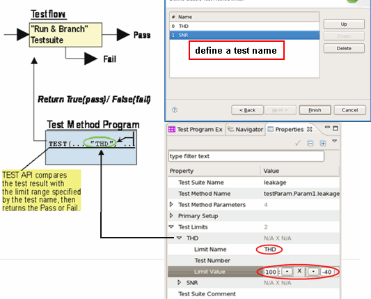

Judging Test Results
To make a judgment (pass or fail) on a test result, you can use the following API:
TEST(...);
This API takes the test result, then returns TRUE if the value is within the limit range. The limit range is specified in the Properties view for the test method program. Here, the system software uses the "testname" identifier in the TEST API.
In the Properties view, you can enter limit values for each "testname" before the test execution.

By default, the test method program execution will be terminated if the TEST API judges the test failed. If you want to always continue the program execution after the TEST API, specify the continue parameter in the TEST API.
You can specify the limit range also in the test method program. For more details, see the descriptions on LIMIT and TEST.
Using the TEST API, you can do not only make judgments but also log test data if data logging functionality is enabled. In this case, information on pin name, test name, pass/fail result, limit range, supplied test-result value, and analog waveforms can be logged. For details of the TEST API, see the following subsections.
Some of the other test method APIs (WAVE_LOG and PUT_DATALOG) are also used for logging analog waveform data. For details, see Logging Data, WAVE_LOG, and PUT_DATALOG.
Functional changes
- Introduced before SmarTest 6.3.2